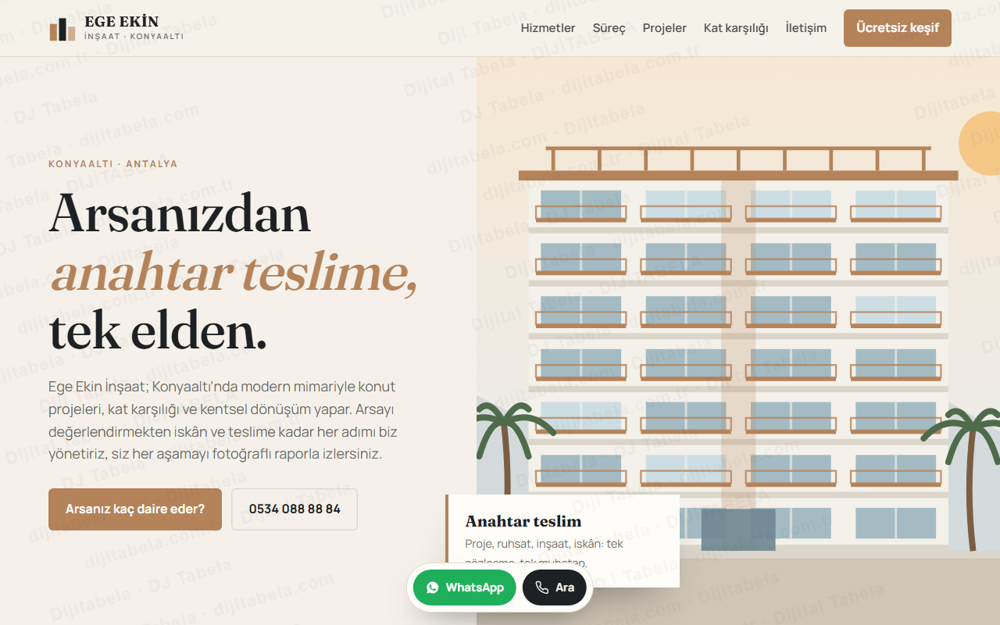
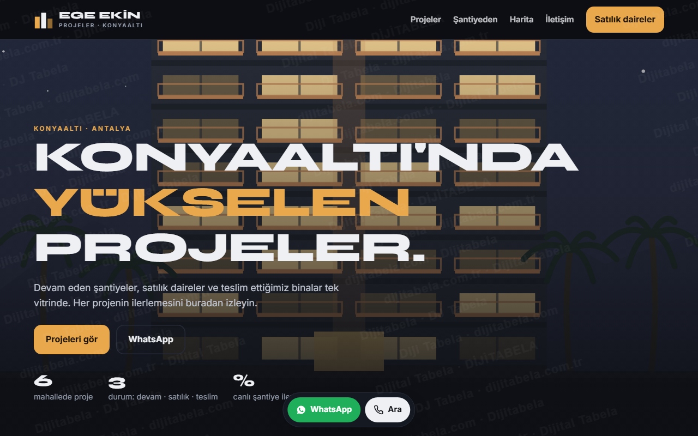
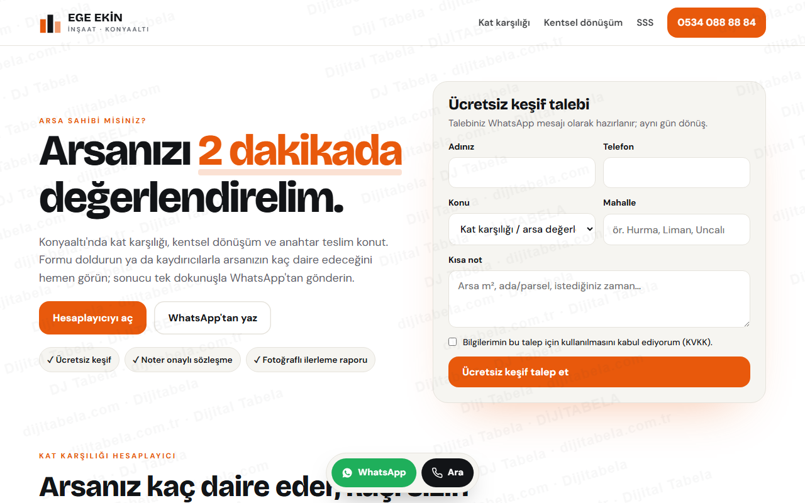

Ege Ekin İnşaat için iş geliştirme planı
Facebook sayfanızı ve internetteki görünümünüzü inceledik: kendi web siteniz ve Google kaydınız yok, sizi arayan arsa sahibi ya da alıcı size ulaşamıyor. Aşağıda büyüme planınız ve planın hediyesi olarak çalışır hâlde 3 web sitesi tasarımı var.
Büyüme planınız
egeekin.com.tr gibi kendi alan adınız; Facebook'taki 15 takipçiden bağımsız, Google'da bulunan bir vitrin.
Kat karşılığı hesaplayıcı ve ücretsiz keşif formuyla arsa sahipleri doğrudan size yazar.
Google İşletme Profili açılışı; "Konyaaltı inşaat firması", "kat karşılığı Antalya" aramaları için sayfalar.
Proje vitrini, şantiye ilerleme raporları ve satılık daire sayfaları; alıcıya güven verir.
Hediye: 3 web sitesi tasarımı, hepsi çalışır hâlde

Kurumsal güven: taş-antrasit renkler, büyük mimari görsel, hizmetler ve altı adımlı süreç.
Canlı aç →
Portfolyo: filtreli projeler, şantiye ilerlemesi, Konyaaltı haritası, koyu ve iddialı.
Canlı aç →
Dönüşüm odaklı: kat karşılığı hesaplayıcı, ücretsiz keşif formu, WhatsApp ve tıkla-ara.
Canlı aç →- Kat karşılığı hesaplayıcı: arsa sahibi m², emsal ve paylaşım oranını kaydırır, kaç daire çıkacağını ve kaçının kendisine düşeceğini anında görür, sonucu WhatsApp'tan gönderir
- Proje vitrini: devam eden / satılık / tamamlanan filtreleri, her projede inşaat ilerleme yüzdesi ve detay penceresi
- Konyaaltı haritası: projeler mahalle mahalle; pine dokununca proje kartı açılır
- Ücretsiz keşif formu: talep WhatsApp mesajı olarak hazır gelir; sabit WhatsApp ve tıkla-ara düğmesi her sayfada
Görseller Dijitabela'nın ürettiği temsilî mimari illüstrasyonlardır; proje kartları örnektir. Facebook'taki görsellerin kaynağı doğrulanamadığı için kullanılmadı; sizin gerçek proje fotoğraflarınızla değiştirilir.